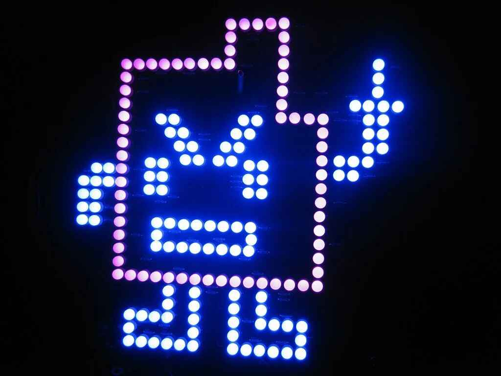

Danny Tarantola
Member since December 4, 2025 •
Biography
Danny Tarantola is a producer based in Long Island, New York. He began crafting beats in late 2019 and released his first tapes in 2020, building a loyal following by 2023 with projects like 'ALLGASNOBREAKZ' and 'GHOST'.
His production style is defined by "alien-like" simplicity, featuring heavy 808s and rapid hi-hats. A frequent collaborator of Loctify, Danny officially joined RAINOUT in December 2025.